import matplotlib.pyplot as plt
from pdpatch.core import *seaborn
A drop-in replacement for
seaborn that renames all labels from snake_case to Words.
renamer
renamer (fun)
Seaborn
Seaborn ()
Like express but renames all columns from snake_case to Words.
df = pd.DataFrame({'time__s__': range(10), 'position__m__': range(10)})
sns.regplot(data=df, x='time__s__', y='position__m__');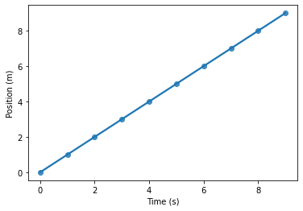
tips = sns.load_dataset("tips")
sns.relplot(data=tips, x="total_bill", y="tip", hue="day");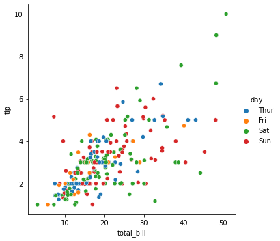
sns.relplot(data=tips, x="total_bill", y="tip", hue="day", col="time");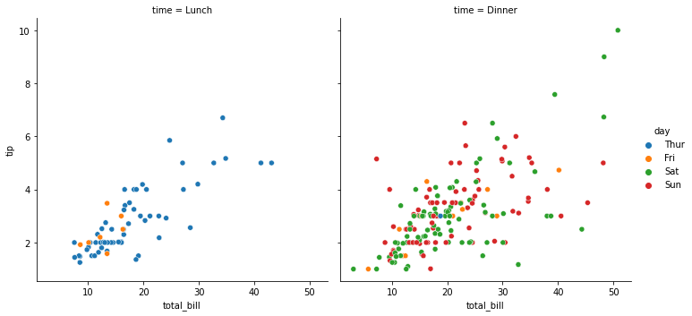
sns.relplot(data=tips, x="total_bill", y="tip", hue="day", col="time", row="sex")<seaborn.axisgrid.FacetGrid>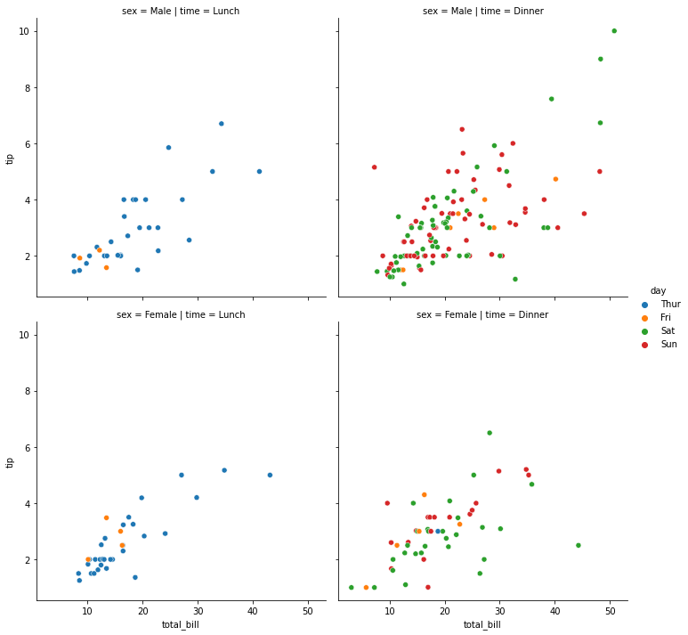
sns.relplot(
data=tips, x="total_bill", y="tip", col="time",
hue="time", size="size", style="sex",
palette=["b", "r"], sizes=(10, 100)
)<seaborn.axisgrid.FacetGrid>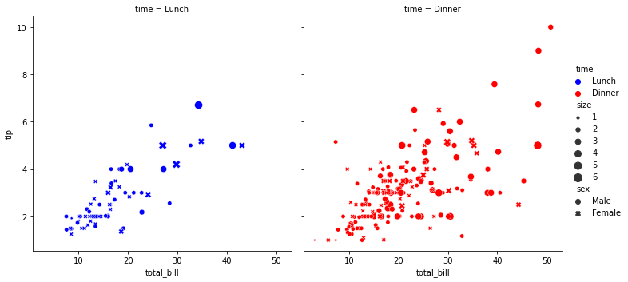
fmri = seaborn.load_dataset("fmri")
sns.relplot(
data=fmri, x="timepoint", y="signal", col="region",
hue="event", style="event", kind="line",
)<seaborn.axisgrid.FacetGrid>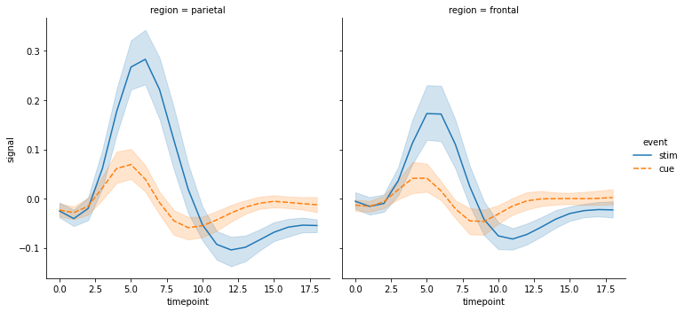
sns.relplot(
data=fmri,
x="timepoint", y="signal",
hue="event", style="event", col="region",
height=4, aspect=.7, kind="line"
)<seaborn.axisgrid.FacetGrid>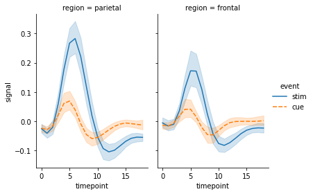
g = sns.relplot(
data=fmri,
x="timepoint", y="signal",
hue="event", style="event", col="region",
height=4, aspect=.7, kind="line"
)
(g.map(plt.axhline, y=0, color=".7", dashes=(2, 1), zorder=0)
.set_axis_labels("Timepoint", "Percent signal change")
.set_titles("Region: {col_name} cortex")
.tight_layout(w_pad=0))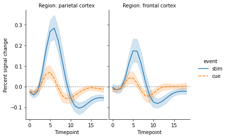
flights_wide = sns.load_dataset("flights").pivot("year", "month", "passengers")
sns.relplot(data=flights_wide, kind="line")<seaborn.axisgrid.FacetGrid>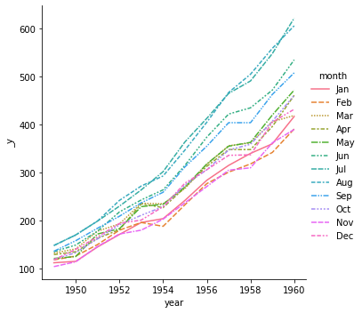
penguins = sns.load_dataset("penguins")
sns.displot(data=penguins, x="flipper_length_mm");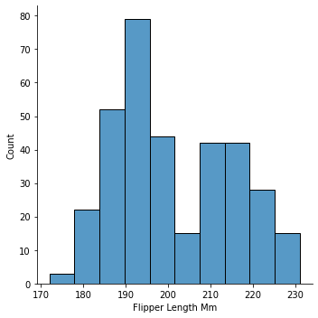
# import seaborn as sns;
sns.set_theme(color_codes=True)
tips = sns.load_dataset("tips")
g = sns.lmplot(x="total_bill", y="tip", data=tips);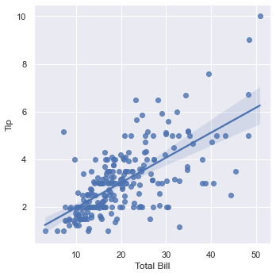
g = sns.lmplot(x="total_bill", y="tip", col="day", hue="day",
data=tips, col_wrap=2, height=3);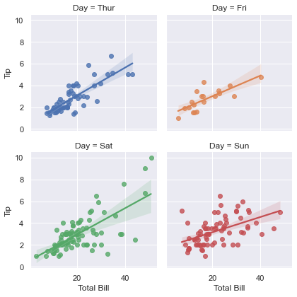
flights = sns.load_dataset("flights")
flights = flights.pivot("month", "year", "passengers")
ax = sns.heatmap(flights);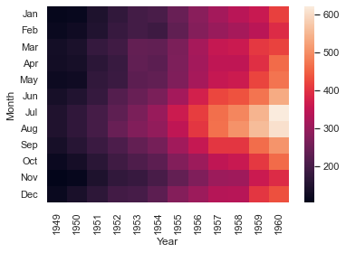
If you use sns.FacetGrid you will have to use the Word version of the column names in the method map and map_dataframe.
tips = sns.load_dataset("tips")
g = sns.FacetGrid(tips, col="time", row="sex")
g.map(sns.scatterplot, "Total Bill", "Tip");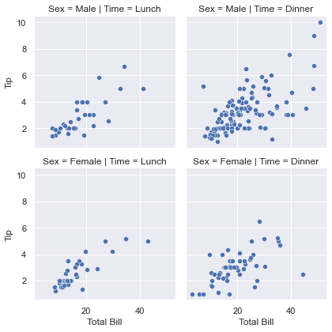
g = sns.FacetGrid(tips, col="time", row="sex")
g.map_dataframe(sns.histplot, x="Total Bill");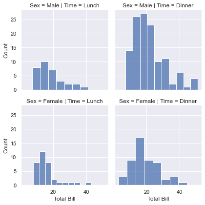